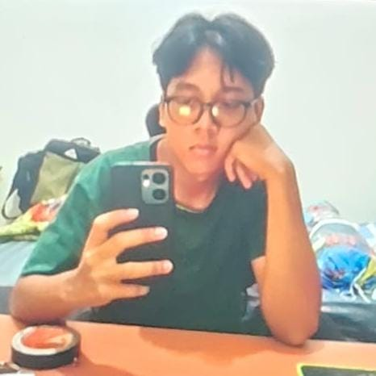

Saya merupakan mahasiswa baru Program Studi S1 Teknik Mesin di Universitas Negeri Surabaya yang memiliki ketertarikan besar terhadap dunia teknologi, rekayasa, dan pengembangan inovasi. Saya memiliki semangat tinggi untuk terus belajar, memperluas wawasan, serta mengembangkan kemampuan baik dalam bidang akademik maupun keterampilan praktis. Sebagai mahasiswa Teknik Mesin, saya tertarik untuk mempelajari berbagai aspek keteknikan, mulai dari mekanika, desain dan perancangan mesin, sistem manufaktur, hingga perkembangan teknologi industri modern. Saya percaya bahwa ilmu teknik mesin memiliki peran penting dalam menciptakan solusi terhadap berbagai permasalahan di kehidupan sehari-hari melalui penerapan ilmu pengetahuan, kreativitas, dan teknologi. Saya juga memiliki motivasi untuk terus mengeksplorasi hal-hal baru, meningkatkan kemampuan berpikir kritis, mengasah keterampilan dalam memecahkan masalah (*problem solving*), serta membangun pola pikir yang inovatif dan adaptif terhadap perkembangan zaman. Bagi saya, proses belajar bukan hanya tentang memahami teori, tetapi juga bagaimana mengimplementasikan pengetahuan tersebut menjadi sesuatu yang bermanfaat dan memiliki nilai guna. Melalui perjalanan pendidikan di Universitas Negeri Surabaya, saya berharap dapat mengembangkan potensi diri, memperoleh pengalaman baru, membangun relasi dan kolaborasi yang positif, serta meningkatkan kompetensi untuk menghadapi tantangan di dunia industri dan profesional. Saya berkomitmen untuk terus berkembang menjadi pribadi yang disiplin, bertanggung jawab, kreatif, dan mampu beradaptasi dengan berbagai tantangan. Dengan semangat belajar dan rasa ingin tahu yang tinggi, saya ingin menjadikan setiap pengalaman sebagai kesempatan untuk bertumbuh, menghasilkan karya, serta berkontribusi dalam perkembangan teknologi dan dunia rekayasa teknik di masa depan.

YOUR PROFILE PHOTO
Kenali lebih dekat tentang diri saya.
Halo! Perkenalkan, saya [NAMA LENGKAP], seorang mahasiswa baru Program Studi S1 Teknik Mesin, Fakultas Teknik, Universitas Negeri Surabaya (UNESA).
Saya merupakan individu yang memiliki rasa ingin tahu tinggi, semangat belajar, dan ketertarikan terhadap perkembangan teknologi serta dunia rekayasa mesin.
Sebagai mahasiswa baru, saya ingin memanfaatkan masa perkuliahan untuk mengembangkan kemampuan akademik, keterampilan teknis, kreativitas, komunikasi, dan pengalaman organisasi.
Perjalanan pendidikan saya.
Program Sarjana (S1) Teknik Mesin
Fakultas Teknik - Universitas Negeri Surabaya
Fokus pada pembelajaran dasar teknik, ilmu mekanika, material teknik, matematika teknik, dan pengembangan teknologi rekayasa.
Kemampuan yang sedang dan ingin saya kembangkan.
Ketertarikan dalam desain, perancangan komponen mesin, dan gambar teknik.
Pengembangan kemampuan teknologi digital dan pemanfaatan software untuk kebutuhan teknik.
Kemampuan interpersonal untuk mendukung kolaborasi dan pengembangan diri.
Berpikir kritis, menganalisis permasalahan, dan mencari solusi secara sistematis.
Mengembangkan kemampuan akademik melalui pembelajaran dan penelitian.
Mempelajari dasar-dasar mekanika, material, dan sistem permesinan.
*Daftar skill di atas merupakan contoh bidang kemampuan yang dapat disesuaikan dengan kemampuan aktual Anda.
Bidang teknik yang ingin saya pelajari lebih dalam.
Dunia otomotif, kendaraan, mesin pembakaran, dan perkembangan kendaraan modern.
Proses produksi, sistem manufaktur, dan teknologi industri.
Teknologi robotika, otomasi, dan sistem mekanik cerdas.
Perancangan mesin, komponen, dan sistem mekanis.
Teknologi energi, efisiensi, dan energi terbarukan.
Sistem mekanika pesawat, aerodinamika, dan teknologi penerbangan.
Dokumentasi perjalanan belajar dan karya saya.
[Tambahkan deskripsi tugas gambar teknik, sketsa komponen, atau rancangan yang pernah dibuat.]
[Tambahkan hasil desain 3D menggunakan software CAD seperti SolidWorks atau AutoCAD.]
[Tambahkan dokumentasi eksperimen, pembelajaran teknologi, atau proyek elektronika.]
[Tambahkan pengalaman organisasi, kepanitiaan, kegiatan kampus, atau proyek kelompok.]
Langkah awal perjalanan saya menjadi seorang engineer.
Memulai perjalanan sebagai mahasiswa baru S1 Teknik Mesin Universitas Negeri Surabaya.
Mempelajari dasar-dasar teknik mesin, meningkatkan kemampuan digital, dan mengeksplorasi teknologi.
Mengembangkan kompetensi, memperoleh pengalaman proyek, serta memberikan kontribusi melalui bidang teknik mesin.
Terbuka untuk berkenalan, berdiskusi, berkolaborasi, dan berbagi pengalaman dalam dunia pendidikan maupun teknologi.
Send Me an Email